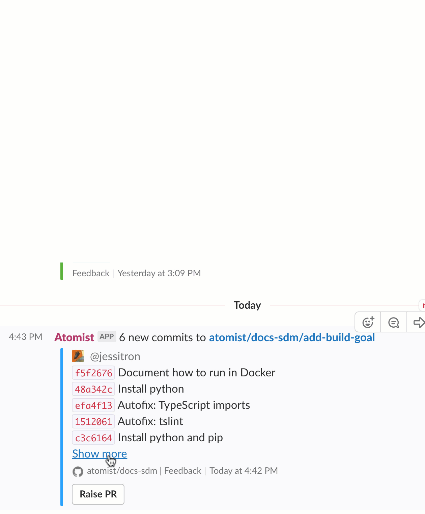

Built-in Chat Integrations
Chat notifications about pushes, builds, pull requests, issues, and issue comments are fewer and far more useful when they’re correlated by Atomist. You get one message per push, and that message updates as new information comes in. Less spam in your channels! Even better, the messages have buttons that make them useful.
Messages
Push
A code push is the most recognized event in the delivery process. Atomist correlates all of this into a dynamic, updating push notification:
- Commit summaries, grouped by author
- GitHub statuses
- Build results
- SDM Goals, with approval buttons
- Tags
- Deployments
- Buttons: Raise PR for branches, Restart Build when it failed
Here’s a sample push notification with SDM goals:

Build
Build status is included on the push notification, right next to the commit message. This could be a build performed by your Atomist SDM or by another build system like Jenkins, Travis, TeamCity, etc. If a build fails, the person who made the commit gets a private message with a link to the log.
Linked Channels
Messages about each repository are sent to chat channels linked to that repository. You control which repositories are linked to which channels are linked from chat, within the channel itself.
Link a repository to a channel to start receiving messages like Push and Issue.
This will also give the channel some context: if there’s one repository linked,
and you say @atomist create issue,
Atomist will put the new issue in that repository.
What repositories are linked?
Within any chat channel, say @atomist repos to see whether any repositories are linked.
You’ll get a list of linked repositories (with an “unlink” button for each) and a button
to link a new channel.
Link a repository
Within a channel, say @atomist link repo to link a repository to that channel.
Atomist will ask you for the repository name. It’ll give you a dropdown box if there aren’t too
many channels to list in it.
(If Atomist hasn’t been invited yet, invite it; after that, you’ll have to type the command again. It can’t see any messages that appeared before it was invited.)
Your Atomist workspace might be connected to multiple repository owners–multiple GitHub organizations, say, or multiple versions systems like GitHub and GitLab. In this case, Atomist will ask you to choose the owner first, and then the repository.
Hint
If you already have a repository linked to this channel, Atomist
will assume you want to link a repository with the same owner. If you want a different one, try @atomist link repos owner=<other-organization>.
Customize the link
You can turn some messages on and off. For instance, do you want to hear about the lifecycle of a Pull Request? How about a branch? Maybe not Issue Comments, anymore.
Say @atomist configure lifecycle to see your options.
Unlink a repository
Say @atomist repos to get a list of linked repositories; push the “Unlink” button on the one you want to remove.